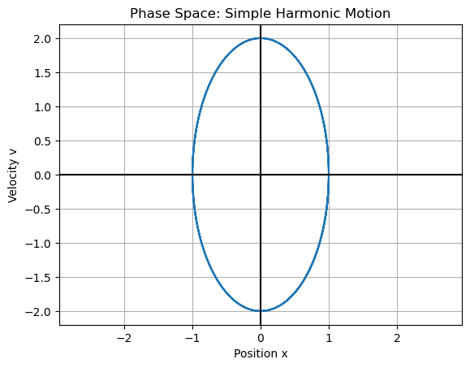
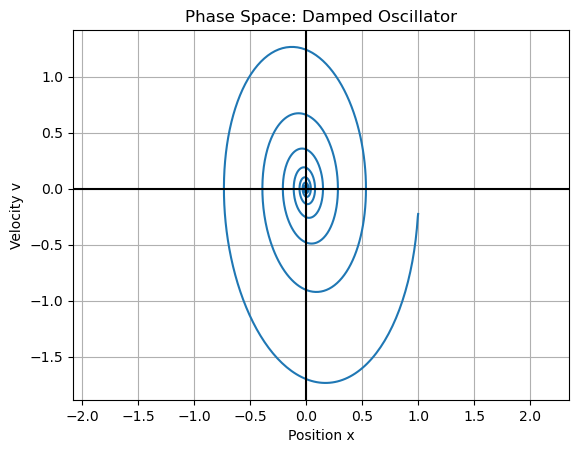

D6.4 Phase Space#
D6.4.1 Why Phase Space Matters#
When we describe motion, we often start by plotting position as a function of time:
This is useful, but it does not always show the full structure of the motion.
To fully specify the state of a system, we need both:
A phase-space plot shows motion in:
Instead of asking where the object is, we ask:
How does the system evolve through its possible states?
D6.4.2 Definition: Phase Space#
Definition: Phase Space
For a one-dimensional system, phase space is the space:
where each point represents a complete state of the system.
As time evolves, the system traces out a trajectory in this space.
D6.4.3 Example: SHM in Phase Space#
For a spring:
which produces a closed trajectory in phase space.

D6.4.4 Interpretation (SHM)#
The trajectory is closed → motion is periodic
The system returns to the same states repeatedly
Energy is conserved
Turning points: $\( x = \pm A, \quad v = 0 \)$
Maximum speed: $\( x = 0 \)$
Closed curves in phase space indicate conserved energy and repeating motion.
D6.4.5 Example: Damped Oscillator#
For damping:
the amplitude decreases over time, so the trajectory no longer closes.
%reset -f
import numpy as np
import matplotlib.pyplot as plt
A = 1.0
omega0 = 2.0
gamma = 0.2
omega_d = np.sqrt(omega0**2 - gamma**2)
t = np.linspace(0, 40, 3000)
x = A * np.exp(-gamma * t) * np.cos(omega_d * t)
v = np.gradient(x, t)
plt.figure()
plt.plot(x, v)
plt.xlabel("Position x")
plt.ylabel("Velocity v")
plt.title("Phase Space: Damped Oscillator")
plt.axhline(0,color='k')
plt.axvline(0,color='k')
plt.grid(True)
plt.axis("equal")
plt.show()

D6.4.6 Interpretation (Damped Motion)#
Trajectory spirals inward
Energy decreases over time
System approaches equilibrium:
Spiraling trajectories indicate energy loss and relaxation toward equilibrium.
D6.4.7 Why Phase Space Matters Going Forward#
Phase space is a central tool in classical mechanics:
Stability → equilibrium points in phase space
Linearization → motion near fixed points
Coupled oscillators → higher-dimensional phase space
Lissajous curves → combined oscillations
Nonlinear systems → complex trajectories
Chaos → sensitive dependence visible in phase space
Later, we generalize:
Phase space shifts the focus from position vs time to the evolution of the system's state — a key step toward advanced mechanics.